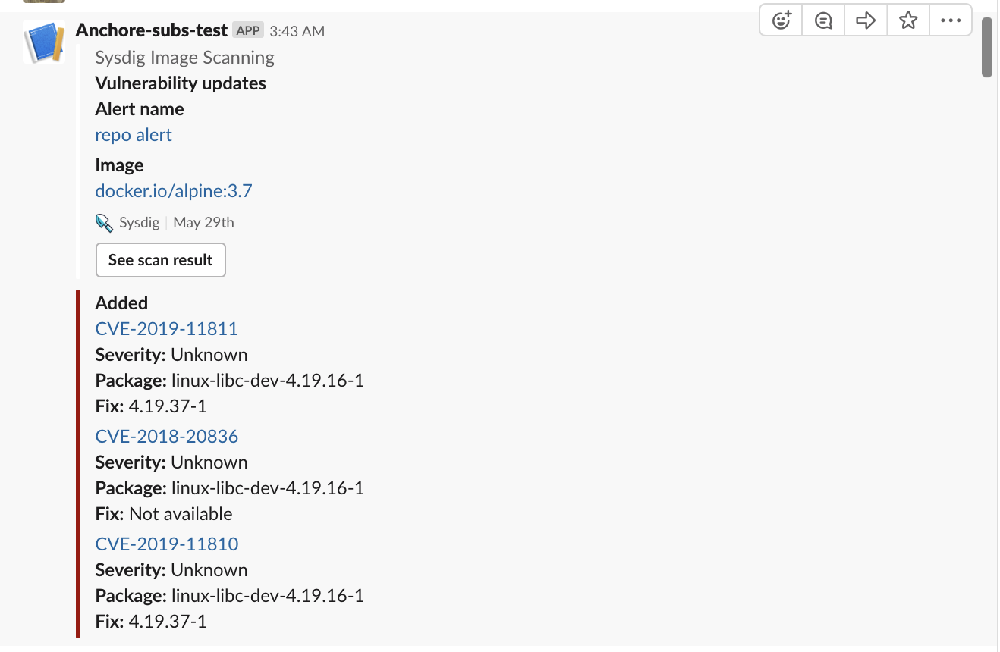

Manage Scanning Alerts
Image scanning alerts, like all Sysdig alerts, can be configured to notify users when an issue in the infrastructure arises. Scanning alerts can be created for static images in the repository or for running (runtime) images. Scanning alerts focus on when unscanned images are added to the environment, images fail a policy evaluation, scanning results change, or CVEs are updated.
Examples of when users might implement alerts:
I want to know if there are new CVE updates for the 3 different images I handle
I want to be notified if any of the common images from docker hub that are used all over my organization have a policy status that has changed
Manage the Scanning Alert List
From the Image Scanning module, choose the Alerts tab. The Scanning Alert list is displayed.
 |
From here you can search for existing alerts, and create, duplicate or delete alerts.
Add an Alert
To create a new alert: From the
Image Scanningmodule, choose theAlertstab and clickAdd Alert.Select either
RuntimeorRepositoryalert type.
Fill in the appropriate New Alert page (below).
Create a Runtime Alert
Use Runtime alerts to scan running images and trigger a notification in case of a policy violation, status change, or unscanned image added to the environment. Enter the alert parameters and click Save.
 |
Basic Parameters
Enter a Name and optional Description.
Scope
Use Entire Infrastructure or define a narrower scope.
Triggers
Unscanned Image
Scan:Check the box and choose Scan to automatically scan any detected image within the scope.See also Scan Images.
Alert Only: Send an alert, but don't automatically scan the images.
Scan Result Change
Pass/Fail:Choose this option to be notified when an image that had previously passed now fails its policy evaluation.Any Change:Choose this option to be notified when there is any change on a previously scanned image result.
Note that if Scan Result Change is checked and a notification channel is configured, an alert will be sent. If no channel is set up, nothing will happen.
For example, the following image shows a Slack notification that was triggered when "Any Change" was configured.
 |
CVE Update
Choose this option to be notified whenever a vulnerability is added, updated, or removed from a running image.
Notification Channel
Click + Add Channel to select a configured notification channel (e.g. email) to be used for alert notifications.
If no notification channels have been defined for your Sysdig Secure environment yet, see Set Up Notification Channels.
Create a Repository Alert
Use Repository alerts to scan static images in the repository and trigger a notification in case of a policy violation, status change, or a new image added to the environment. Enter the alert parameters and click Save.
 |
Basic Parameters
Enter a Name and optional Description.
Registry/Repo/Tag
Enter the registry scope to be considered in the alert. Wildcards * are supported. If a wildcard is used for either the registry or the repo, the only alert option will be New Image Analyzed.
Triggers
New Image Analyzed
Check the box to be alerted whenever a new image is analyzed, regardless of the result.
Scan Result Change
Pass/Fail:Choose this option to be notified when an image that had previously passed now fails its policy evaluation.Any Change:Choose this option to be notified when there is any change on a previously scanned image result.
Note that if Scan Result Change is checked and a notification channel is configured, an alert will be sent. If no channel is set up, nothing will happen.
CVE Update
Choose this option to be notified whenever a vulnerability is added, updated, or removed from an image within the repository alert scope.
For example, the following image shows a Slack notification that was triggered when "CVE Update" was configured.
|  |
Notification Channel
Click + Add Channel to select a configured notification channel (e.g. email) to be used for alert notifications.
If no notification channels have been defined for your Sysdig Secure environment yet, see Set Up Notification Channels.
Edit an Alert
From the
Image Scanningmodule, choose theAlertstab.Select the desired alert from the list.
Edit the alert trigger, scope, and notification channels as necessary, and click
Save.
Duplicate an Alert
From the
Image Scanningmodule, choose theAlertstab.Select the desired alert from the list.
Click the
More(three dots) icon and clickDuplicate Alertfrom the drop-down, thenYesto confirm.
Delete an Alert
From the
Image Scanningmodule, choose theAlertstab.Select the desired alert from the list.
Click the
More(three dots) icon and clickDelete Alertfrom the drop-down, thenYesto confirm.